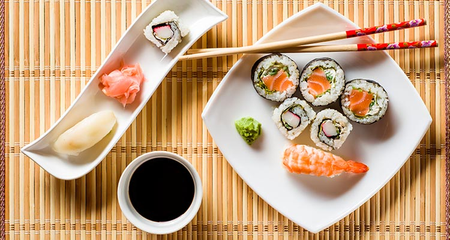
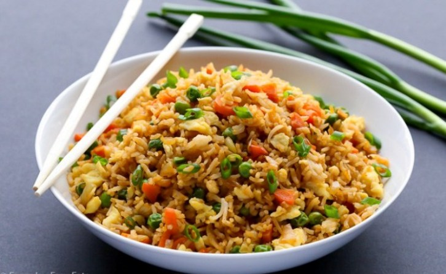

BLOGOURMET
El mundo de las delicias
Sushi
Es un plato de origen japonés basado en arroz que se acompaña en general con: sésamo, salmón o trucha, dependiendo de los gustos puede estar crudo o cocido adobado con vinagre de arroz, azúcar, sal y otros ingredientes, como verduras, pescados o mariscos.Este plato es uno de los más reconocidos de la gastronomía japonesa y uno de los más populares internacionalmente.

Excelente Plato !! :)
Que delicia, que obra de la gastronomia ricoo !!
Arroz Chino
El Arroz Frito o el Arroz Chino es un plato de la cocina china. Su origen es un plato casero proveniente de China y del que se supone que procede de 4000 a. c., elaborado de una receta que incluye el arroz como ingrediente principal. Básicamente, consiste en un arroz cocido que se saltea a fuego alto y muy rápido en un wok con verduras como cebolla china, raíces chinas, tortilla de huevo en trozos, carnes, salsa de soja y aceite.
Excelente Plato !! :)
Que delicia, que obra de la gastronomia ricoo !!